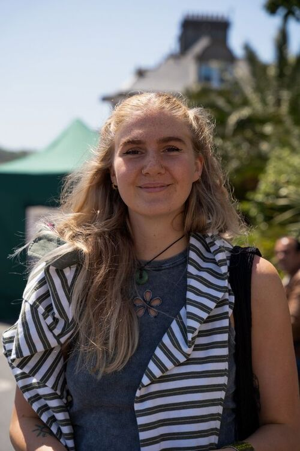
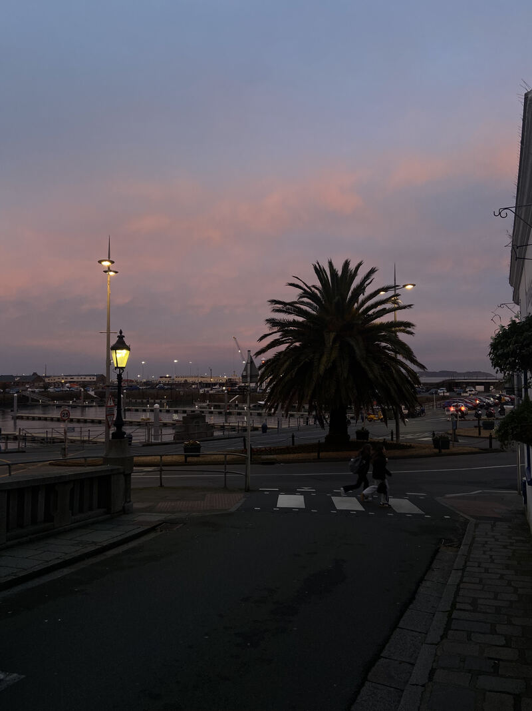
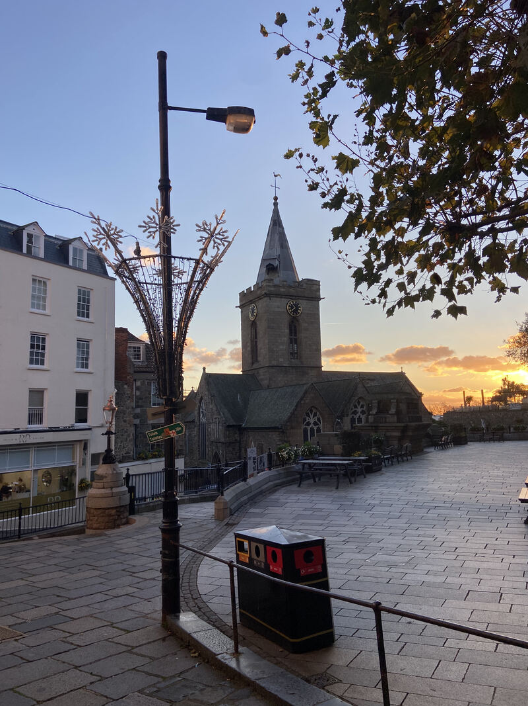
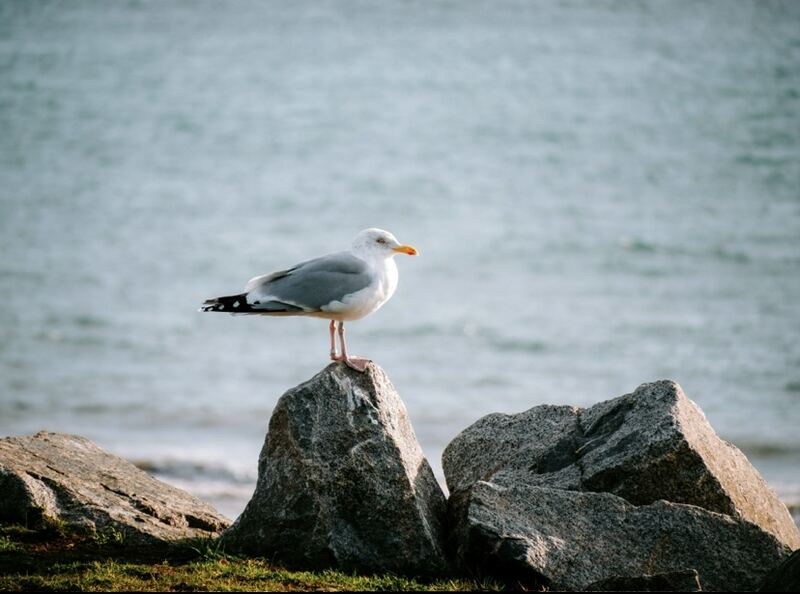

I'll take you past stories you won't find in a guidebook, through lanes most visitors walk right by, and to the spots where the locals actually go. You take home a tote bag with local treats.

I live on this beautiful island and fell in love with the history you come across on every corner. Without a car, I walk through Saint Peter Port and keep discovering new stories in the lanes, on the facades and behind the doors of old buildings. Those stories I'd love to share with you.

This isn't a standard tour where someone rattles off dates while you stare at buildings. We walk at a relaxed pace through the oldest corners of St Peter Port, and at every stop I'll tell you something about the place, the people who came before, or the story that still clings to the walls. Sometimes it's big history. Sometimes it's local folklore.
At the end, you take home a tote bag filled with local goodies — a little piece of Guernsey to keep.
Occupation, liberation, sailors and exiles. Guernsey has lived through more than most islands. You'll hear it at every stop.
Will-o'-the-wisps, gargoyles and old sayings. The islanders have their own stories passed down through generations.
Every guest takes home a locally printed tote bag with Guernsey goodies, a route map and vouchers for local spots.
No car, no bus needed. The entire route winds gently through the centre. Just be ready for a steep lane or two.

Every guest receives a locally printed tote bag at the start of the tour with a local treat inside.
We meet at 11:00 AM at the Bus Terminus and walk at our own pace. At every stop we pause for a moment, so you can take it all in. Plan for about one and a half to two hours.
The tour is available in English and Dutch. So if you'd rather not juggle with a foreign language while trying to remember the stories, no worries.
There are only a handful of spots per tour. That way it stays fun, personal, and everyone actually has room to ask questions.
Tours run every day, however there is a minimum capacity of 4 people. Get in touch and we'll find a date that works for you.

Send me a message and I'll let you know when the next tour takes place. There are only a few spots per tour, so it stays relaxed and personal.
Staying at Le Chêne? Just ask at reception and they'll sort it for you.